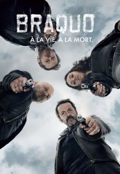

")
 
 IMDB-Wertung: 8.1 / 10
IMDB-Wertung: 8.1 / 10  Metascore:
Metascore: 
Ungeschminkt und brutal erzählt BRAQUO die Geschichte von vier Pariser Cops, die alles daran setzen, den Ruf ihres toten Teamleiters und Kollegen wiederherzustellen. Nachdem dieser fälschlicherweise unter Korruptionsverdacht gerät und sich das Leben nimmt, beginnen sie auf eigene Faust zu ermitteln. Dabei steht ihnen vor allem eins im Weg: die eigene Polizeibehörde. Doch die Männer geben nicht auf und schrecken bei ihrer Suche nach der Wahrheit auch vor fragwürdigen Methoden jenseits der Legalität nicht zurück. 2012 wurde die von der Kritik hochgelobte Krimiserie von Olivier Marchal, der selbst lange Jahre im französischen Polizeidienst arbeitete und bei einer Antiterroreinheit diente, mit einem International Emmy® Award als beste Drama-Serie ausgezeichnet.
Jahr: 2009
Dauer: 50 Minuten
FSK: 16
Land: Frankreich Studio: Alive Vertrieb und MarketingTonspuren:
Untertitel:
Auflösung: SD (720x404) Größe: 128000 MB
Genre: Thriller, Krimi, TV-Serie
Regisseur: Xavier Palud, Olivier Marchal, Frédéric Schoendoerffer, Philippe Haïm, Eric Valette, Manuel Boursinhac, Frédéric Jardin
Drehbuch: Scott Roberts
Soundtrack:
Darsteller:
 Jean-Hugues Anglade als Eddy Caplan
Jean-Hugues Anglade als Eddy Caplan Nicolas Duvauchelle als Théo Vachewski
Nicolas Duvauchelle als Théo Vachewski Mark Ivanir als Levani Jordania
Mark Ivanir als Levani Jordania Assaad Bouab als Redouane Buzoni
Assaad Bouab als Redouane Buzoni Lilou Fogli als Sara
Lilou Fogli als Sara Ivan Franek als Andreas Megrelishvili
Ivan Franek als Andreas Megrelishvili Virgile Bramly als Daniel Arifa
Virgile Bramly als Daniel Arifa Eric Godon als Hugo Christiaens
Eric Godon als Hugo Christiaens Olivier Rabourdin als Max Rossi
Olivier Rabourdin als Max Rossi Moussa Maaskri als Teddy Hoffman
Moussa Maaskri als Teddy Hoffman Vincent Grass als Breymaert
Vincent Grass als Breymaert Finnegan Oldfield als Jeune braqueur
Finnegan Oldfield als Jeune braqueur Audrey Quoturi als Invitée veillée funéraire
Audrey Quoturi als Invitée veillée funéraire Alain Figlarz als Serge Lemoine
Alain Figlarz als Serge Lemoine Isabelle Renauld als Michelle Bernardi
Isabelle Renauld als Michelle BernardiDatei: X:\HD-Serien\Braquo\S01\Braquo S01E01 Max.mkv seit 25.11.2016
Festplatte: HD Serien(A-H)
 Es gibt insgesamt 182 Filme in der Gruppe 'HD-Serien'
Es gibt insgesamt 182 Filme in der Gruppe 'HD-Serien'